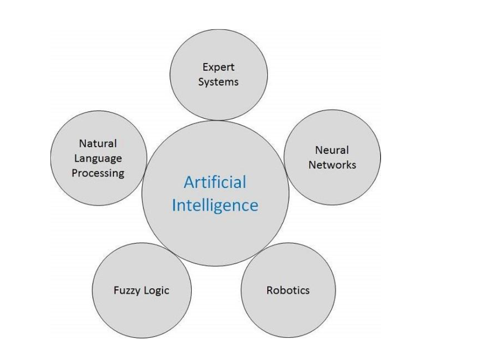

Introductory knowledge of Artificial Intelligence
Kể từ khi phát minh ra máy tính và máy móc, khả năng thực hiện các nhiệm vụ khác nhau của chúng đã tăng lên theo cấp số nhân. Con người đã phát triển hệ thống máy tính trên quan điểm các lĩnh vực làm việc đa dạng, tốc độ ngày càng tăng và kích thước ngày càng giảm theo thời gian. Một nhánh của Khoa học Máy tính có tên là Trí tuệ nhân tạo (AI) đang theo đuổi việc tạo ra các máy tính hoặc máy móc thông minh như con người.
Trí tuệ nhân tạo (AI) là gì?
Theo cha đẻ của Trí tuệ nhân tạo, John McCarthy, đó là “Khoa học và kỹ thuật tạo ra các máy móc thông minh, đặc biệt là các chương trình máy tính thông minh”.
Trí tuệ nhân tạo (AI) là một cách làm cho một máy tính, một robot điều khiển bằng máy tính hoặc một phần mềm suy nghĩ một cách thông minh, theo cách tương tự như suy nghĩ của con người thông minh.
AI được hoàn thiện bằng cách nghiên cứu cách bộ não con người suy nghĩ và cách con người học hỏi, quyết định và làm việc trong khi cố gắng giải quyết một vấn đề và sau đó sử dụng kết quả của nghiên cứu này làm cơ sở phát triển phần mềm và hệ thống thông minh.
Mục tiêu của AI
- Tạo ra hệ thống chuyên gia - Hệ thống thể hiện hành vi thông minh, học hỏi, chứng minh, giải thích và tư vấn cho người dùng của nó.
- Để triển khai trí thông minh của con người trong máy móc - Tạo ra các hệ thống hiểu, suy nghĩ, học hỏi và hành xử như con người.
Các ứng dụng của AI
AI đã thống trị trong các lĩnh vực khác nhau như:
- Game - AI đóng vai trò quan trọng trong các trò chơi chiến lược như cờ vua, poker, tic-tac-toe, v.v., nơi máy có thể nghĩ ra một số lượng lớn các vị trí có thể dựa trên kiến thức kinh nghiệm.
- Xử lý ngôn ngữ tự nhiên - Có thể tương tác với máy tính để hiểu ngôn ngữ tự nhiên của con người.
- Hệ thống chuyên gia - Có một số ứng dụng tích hợp máy móc, phần mềm và thông tin đặc biệt để truyền đạt lý luận và tư vấn. Họ cung cấp giải thích và lời khuyên cho người dùng.
-
Hệ thống thị giác - Các hệ thống này hiểu, diễn giải và lĩnh hội đầu vào trực quan trên máy tính. Ví dụ,
- Máy bay do thám chụp ảnh, được sử dụng để tìm ra thông tin không gian hoặc bản đồ của các khu vực.
- Các bác sĩ sử dụng hệ thống chuyên gia lâm sàng để chẩn đoán cho bệnh nhân.
- Cảnh sát sử dụng phần mềm máy tính có thể nhận dạng khuôn mặt của tội phạm với bức chân dung được lưu trữ bởi nghệ sĩ pháp y.
- Nhận dạng giọng nói - Một số hệ thống thông minh có khả năng nghe và hiểu ngôn ngữ dưới dạng câu và ý nghĩa của chúng trong khi con người nói chuyện với nó. Nó có thể xử lý các trọng âm khác nhau, từ lóng, tiếng ồn trong nền, thay đổi tiếng ồn của con người do lạnh, v.v.
- Nhận dạng chữ viết tay - Phần mềm nhận dạng chữ viết tay đọc văn bản được viết trên giấy bằng bút hoặc trên màn hình bằng bút cảm ứng. Nó có thể nhận ra hình dạng của các chữ cái và chuyển nó thành văn bản có thể chỉnh sửa.
- Robot thông minh - Robot có thể thực hiện các nhiệm vụ do con người giao. Chúng có các cảm biến để phát hiện dữ liệu vật lý từ thế giới thực như ánh sáng, nhiệt, nhiệt độ, chuyển động, âm thanh, va chạm và áp suất. Chúng có bộ xử lý hiệu quả, nhiều cảm biến và bộ nhớ khổng lồ, để thể hiện trí thông minh. Ngoài ra, chúng có khả năng học hỏi từ những sai lầm của mình và chúng có thể thích nghi với môi trường mới.
Các lĩnh vực của AI
